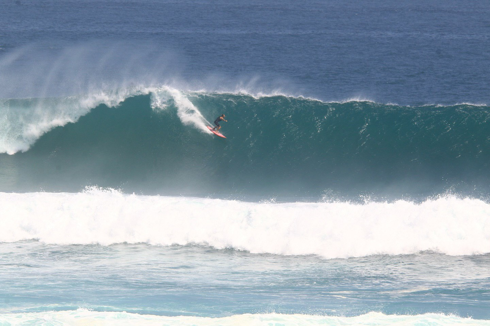

Мексика — это проверка на прочность. Мы отправляемся в Пуэрто-Эскондидо, чтобы встретиться с самыми мощными трубами планеты под контролем профессионала.
Этот трип разработан для тех, кто хочет перейти грань обычного серфинга и почувствовать настоящую энергию океана.
Количество мест в группе ограничено для максимального внимания каждому.
Забронировать место